By Irina Khan, November 4, 2026
Overview
This assignment is aimed to conduct PCA on a dataset containing 150 data points and 5 features describing properties of iris flowers. The features are its sepal length (cm), sepal width (cm), petal length (cm), petal width (cm) and the class of irises (aka Setosa, Versicolor, and Virginica flowers).
Table of Contents
Part 1) PCA by Hand
| $$x_{1}$$ | $$x_{2}$$ |
|---|---|
| -2 | -1 |
| -1 | 0 |
| 0 | 1 |
| 1 | 2 |
| 2 | 3 |
Given the dataset in the table above, the screenshots below showcase the steps required to carry
out the Principle Component Analysis.
The steps carried out are to first center the data, find the covariance matrix, and to find the
eigenvalues and eigenvector of the dataset.
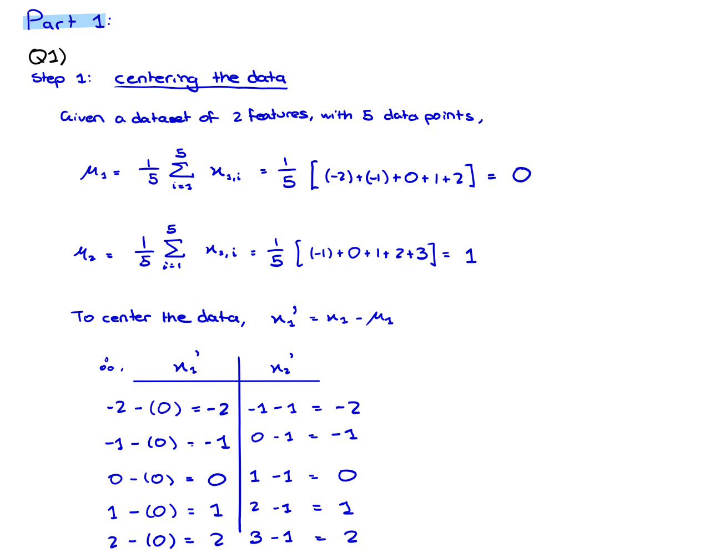
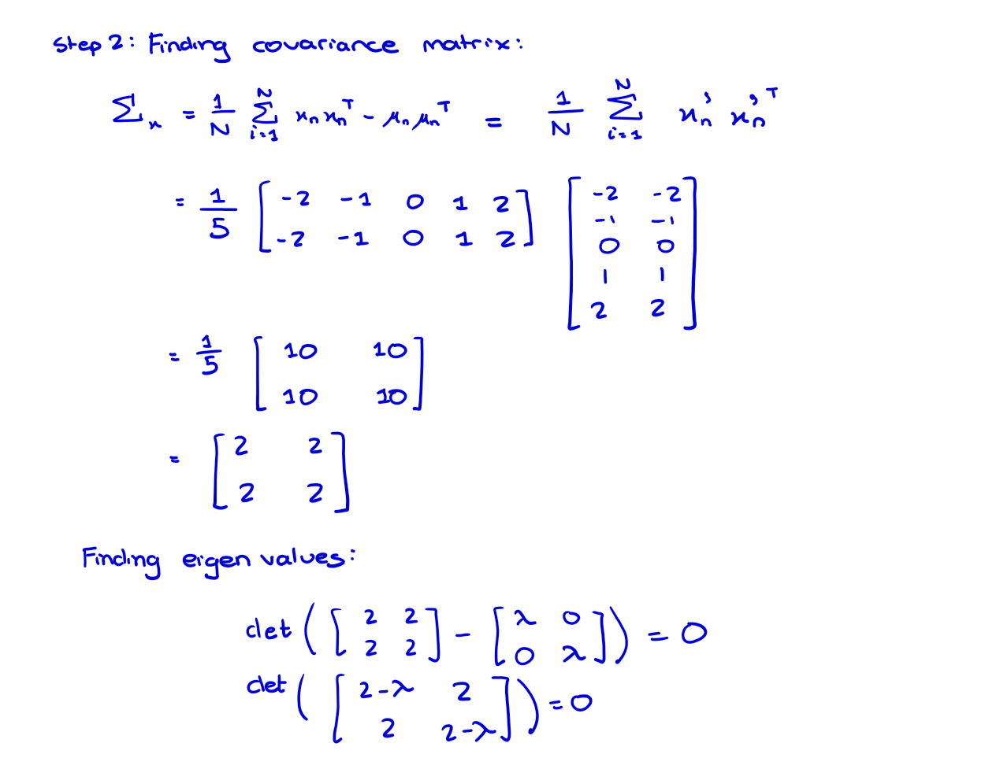
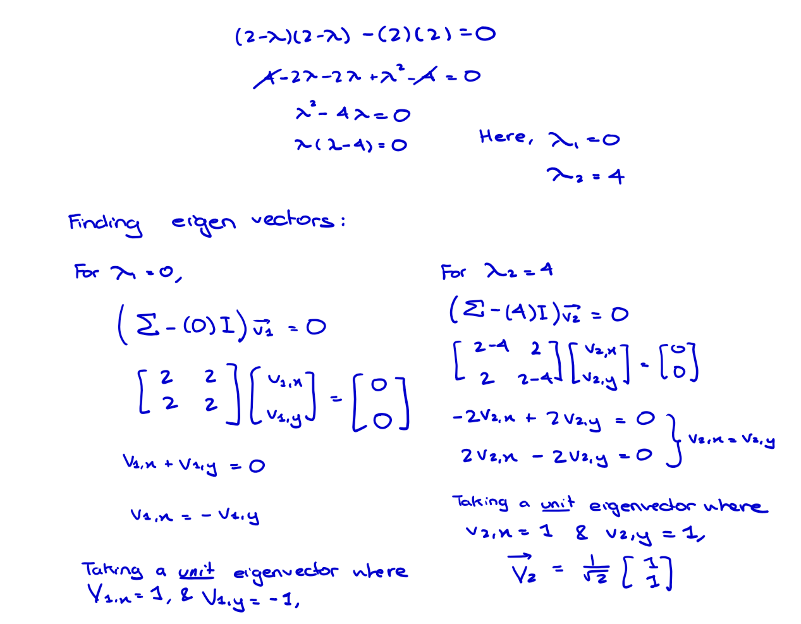
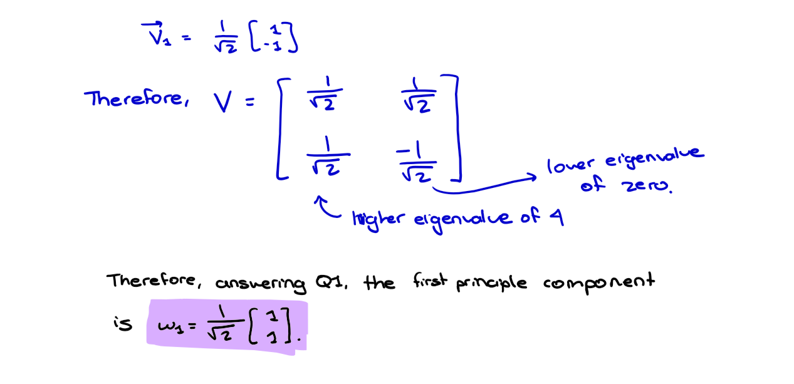
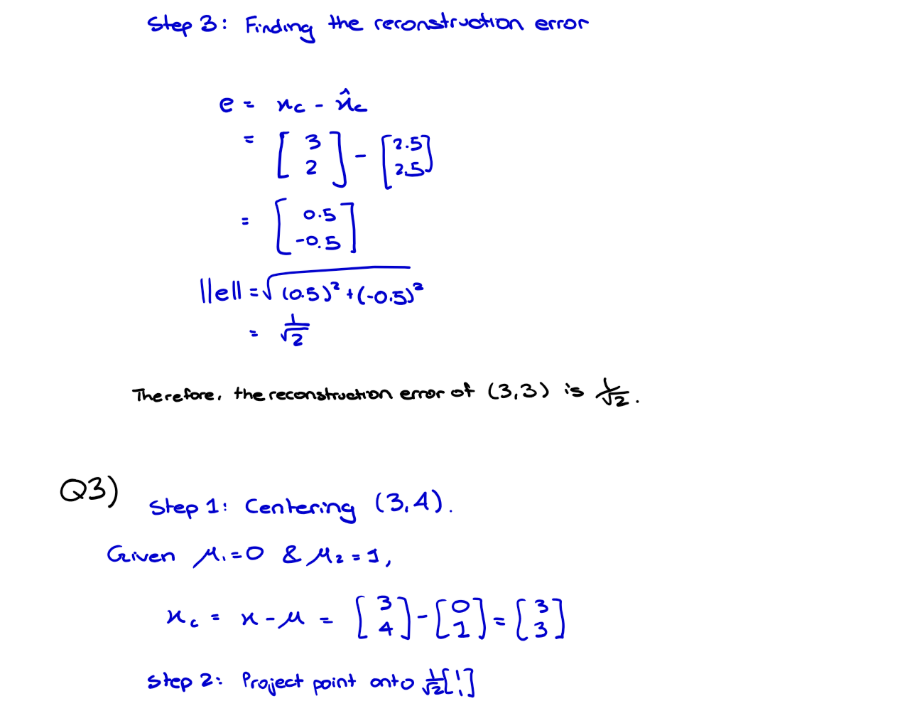
Part 2) Data Visualization of Iris Dataset (2 Features)
The assignments asks to pick any of the 4 class features and marginalize them to visualize *either* one feature, two feature, or three features of the full dataset. I chose to visualize the data in a 2D graph displaying 2 different features. Arbitrarily, I chose the sepal length (which is shown on the x-axis) and sepal width. (which is shown on the y-axis)
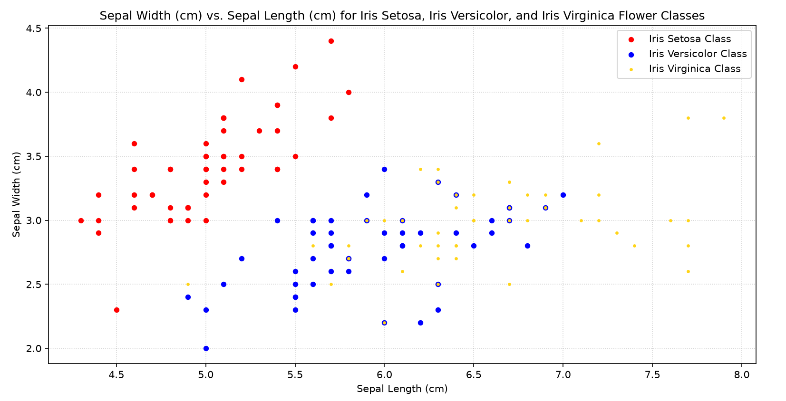
In this specific marginalization and display of the iris dataset, the setosa class (shown in red) can be easily classified by drawing a boundary at approximatly y = 1.2x - 3.2. This equation is obtained by drawing a boundary line between (6, 4) and (4.5, 2.2), and approximating a y-axis intersection at -3.2. Thus, the setosa class can be easily clasified by linear boundaries. However, the versicolor class (shown in blue) and virginica class (shown in yellow) have some points that overlap each other. The 2 classes are all in the same right side of the graph, making it difficult (in this marginalization) to classify points to either class. Thus, this marginalization using only two features is not sufficient to distinguish between all three classes, just the setosa class and the versicolor/virginica class.
Part 3) PCA of Iris Dataset
Using the scikit-learn python function 'StandardScaler', I was able to normalize the data
of the 4 features of 150 datapoints (so that the mean is 0 and the variance is 1), using the
'fit_transform()' function on the StandardScaler variable called "scaler". Then, I used the scikit-learn
python function 'PCA' to actually apply the Principle Component Analysis on the normalized data,
by using the 'fit()' function of the PCA variabled called "pca".
Note, that the number of features of this dataset were set as a constant of FEATURES equal to 5 because
of the fifth column of data that contains the class of each datapoint. However, all mathetmatical operations
conducted on the datapoints occur with 4 features, or [FEATURES - 1] in the
python code.
After running PCA on the dataset, the following table shows the vectors for the components PC1, PC2, PC3, and PC4,
which are based on the location of axes that maximizes the variance in the data. For example, PC1 has a vector of
[0.5224, -0.2634, 0.5913, 0.5656], and onwards for the remaining values listed in the table below.
| PCA Axis | Sepal Length | Sepal Width | Petal Length | Petal Width |
|---|---|---|---|---|
| PC1 | 0.5224 | -0.2634 | 0.5813 | 0.5656 |
| PC2 | 0.3723 | 0.9256 | 0.0211 | 0.0654 |
| PC3 | 0.7210 | -0.2420 | -0.1409 | -0.6338 |
| PC4 | -0.2620 | 0.1241 | 0.8012 | -0.5235 |
For the visualization on the major axis, the 1-D plot below shows the 150 datapoints plotted along the PC1 vector. Please note that for ease of readability, the 3 different classes are seperated vertically, and the points are made translucent, so you may see the density of the data points per iris class. The PC1 axis is on the x-axis, while the y-axis of the plot has the three different classes shown. Both axes are dimensionless.
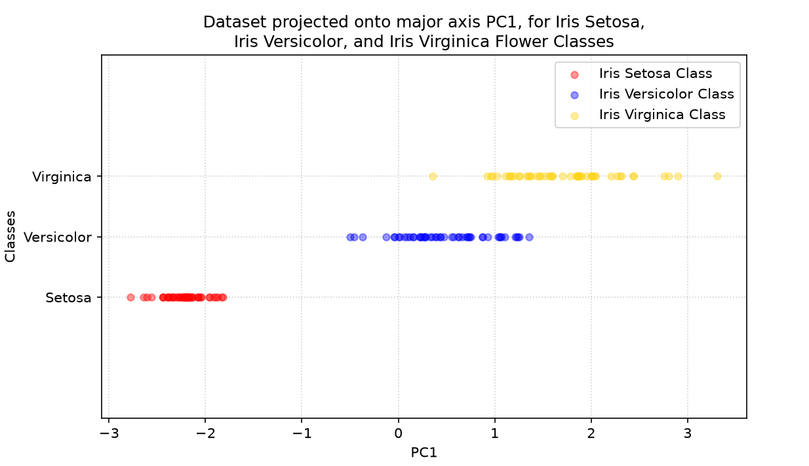
For the visualization of the datapoints against 2 axes, the figure below is a 2D scatter plot that shows the 150 data points against the PC1 and PC2 vectors. The PC1 axis is the x-axis, while the PC2 axis is the y-axis. Compared to the sepal width vs. sepal length graph visualization shown in part 2, the classification of the setosa class of irises (shown in the red dot) is much easier, as the linear boundary appears to be somewhere between x = -1.5 to x = -0.5.
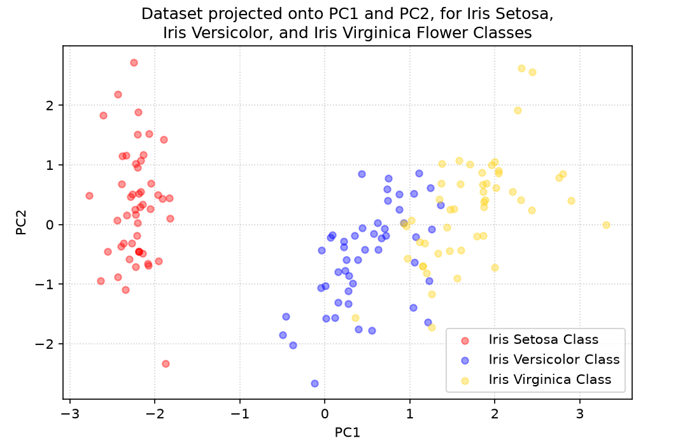
For the visualization of the datapoints against 3 axes, the figure below is a 3D scatter plot that shows the 150 data points against the PC1, PC2 and PC3 vectors.
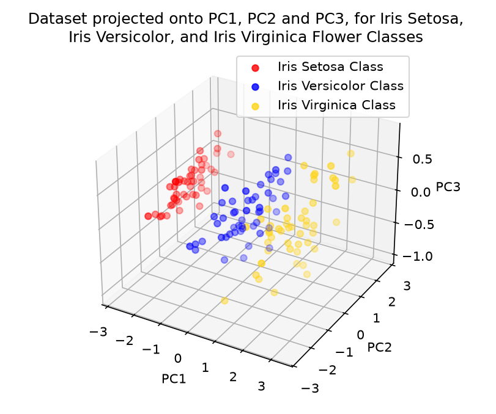
To help with the clarity of the clusters of data points, the subplots below show the top, side and front views of this 3D
visualization, to help see if natural class boundaries form, particularly to help distinguish between the versicolor and virginica classes.
since they have been the most overlapping datapoints in the previous marginalization in Part 2).
The top view of the three axes PC plot:
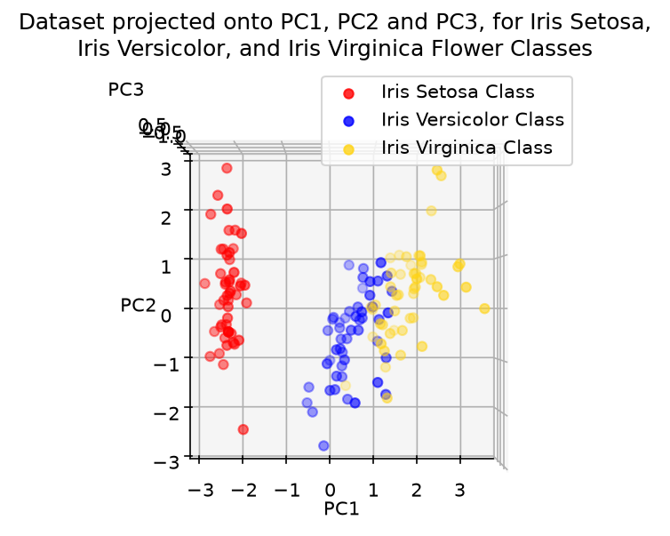
The side view of the three axes PC plot:
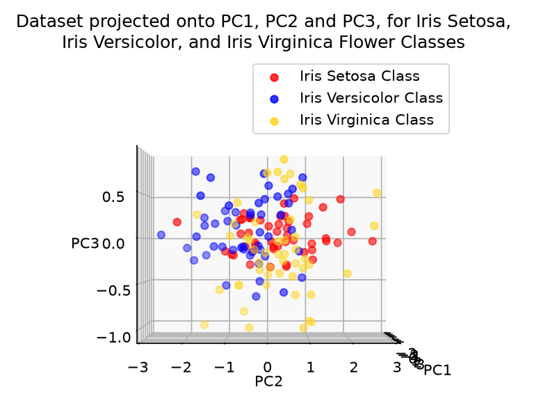
The front view of the three axes PC plot:
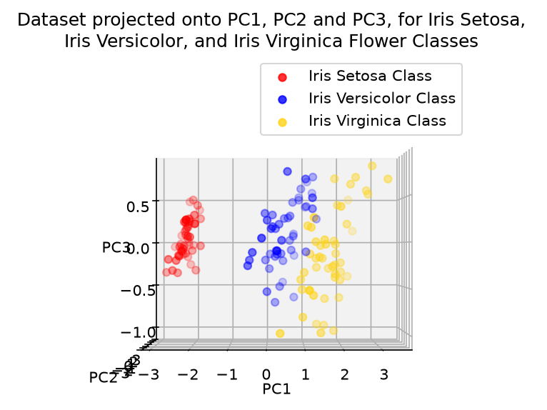
Part 4) Data Compression of Iris Dataset
Before calculating how much of the dataset's variance the PCA axes (PC1, PC2, PC3 and PC4) account for, I wanted
to first check and see that the sum of all of the components accounts for the full variance in the dataset.
The full variance of the dataset can be found using the Frobenius norm, which is calculated from the 150x4 matrix
that is centered. The centering of this data is again found by substracting the mean of each column or feature
from each of the datapoints in their respective columns.
The formula for the Frobenius norm for the 2D matrix is as follows:
$$\|X_{\text{centered}}\|_F^2 = \sum_{r=1}^{150}\sum_{c=1}^{4} (X_{\text{centered}})_{rc}^2$$
To obtain the total variance from the Frobenius norm, it must be divided by the number of sample datapoints, aka (N-1), as follows:
$$\text{Total variance} = \frac{\|X_{\text{centered}}\|_F^2}{150-1}$$
After being implemented into code and calculated, the resulting total variance from the Frobenius norm calculation
is 4.026845637583893. When adding up the variance of each of the components PC1, PC2, PC3, and PC4, the total
variance is 4.026845637583895. The values are extremely close, with only a difference of -1.776e-15, which is a
negligable difference that may be explained by computer rounding errors. This proves that the total variance from PCA
equals the total variance of the Frobenius norm, which accounts for the total variance of the dataset.
The variance of each axis from PCA is found using the 'explained_variance_ratio_' attribute of the 'PCA' class. Each of
the principle components in the table below account for the following percentage of variance of the dataset:
| PCA Axis | Variance (%) |
|---|---|
| PC1 | 72.7705 |
| PC2 | 23.0305 |
| PC3 | 3.6838 |
| PC4 | 0.5152 |
The variance percentages across all four components all add up to 100%.
From the previous part's 2D representation of the dataset (from plotting datapoints against PC1 and PC2), the variance
accounted for from PC1 and PC2 is 95.8010%.
To account for just 50% of the dataset's variance, only PC1 is needed, as it accounts for 72.7705% on its own.
From the conclusions above, it is clear that the PCA does an effective job at data compression, where flattening the data into
two dimensions can be done while preserving approximately 96% of the variance in the data.
Part 5) Finding Non-Linear Components of Iris Dataset via ISOMAP
The plot with the datapoints graphed against the ISOMAP dimensional axes after reducing the dimensions of the dataset from 4 to 3 is shown below, along with the top, side and front views of the 3D plot to help clarify the positions of the datapoints in the 3D space.
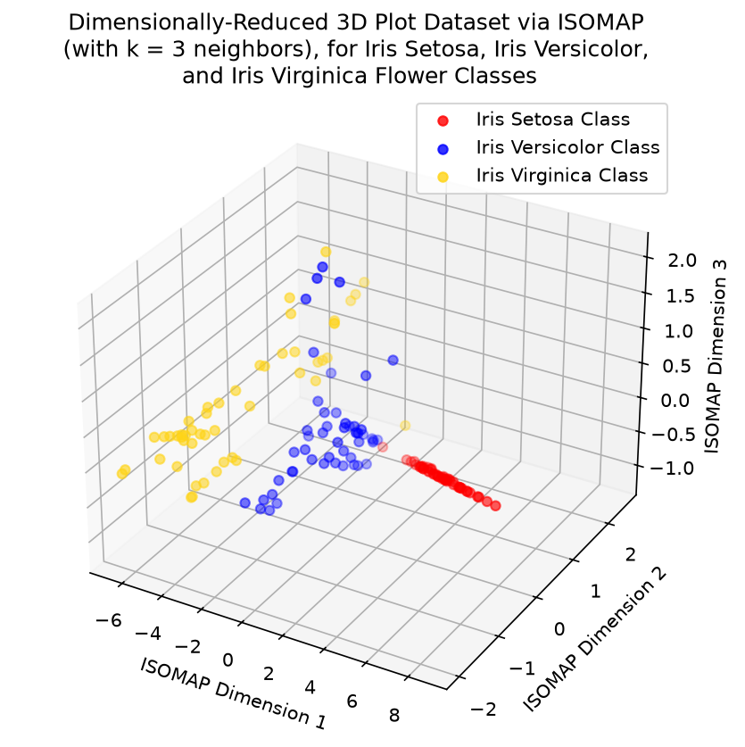
The top view of the ISOMAP plot:
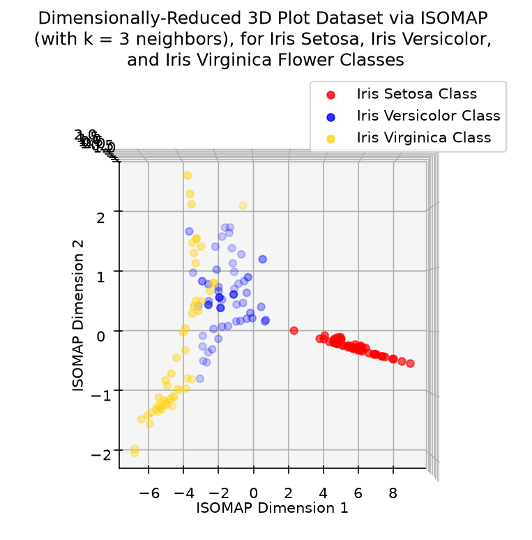
The side view of the ISOMAP plot:
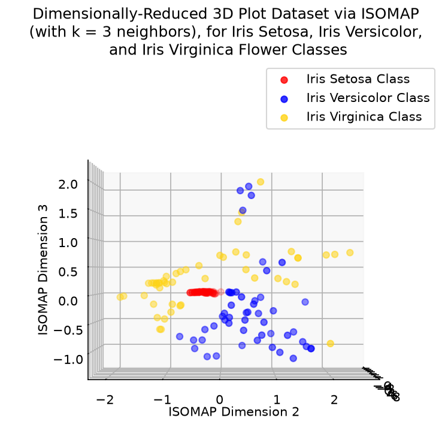
The front view of the ISOMAP plot:
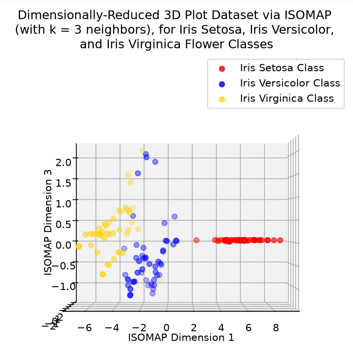
Between the plots generated by the use of three principle components vs the three ISOMAP dimensions, the
setosa class is more easy to distinguish in the ISOMAP plot, as the cluster of datapoints appear to take
the shape of a plane. The ISOMAP method is good at preserving *non-linear* structures across the iris classes,
and it appears that the virginica data points (shown in yellow) form a curved plane when viewed from the top view of the 3D plot.
However, the versicolor classes still are hard to distinguish from the virginica data points, as they overlap. Between the
ISOMAP display and the PCA plot, the overlap between the versicolor and virginica classes appear to be slightly worse (or more mixed up)
in the ISOMAP display vs the front view of the PCA plots.
The data compression criteria is clear for the PCA method, where with all three axes, the retained variance that the
three principle components account for is 99.4848%, while the criteria for the ISOMAP method is not clear, and so it is harder to
determine how much of the original variance the ISOMAP dimensions has preserved.
Thus, since the data compression criteria is clear for the PCA method, and the quality of classfication of datapoints is
not made drastically clearer through the ISOMAP method, I would prefer using the PCA method for this particular application.